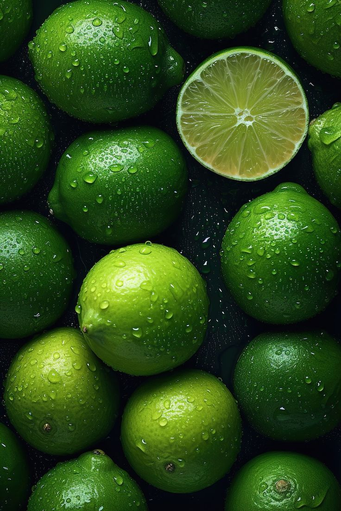

<!--Demonstrating image in  folder -thee image should ve saved in the folder that you are using currently-->

 

<!--FOR IMAGE TAKEN ONLINE 
  1.GO TO THE WEBSITE RIGHT CLICK 
  2.COPY IMAGE ADDRESS 
  3.COPY PASTE IT AFTER SRC-->


<!--WE USE ALT INCASE THE IMAGE DISSAPPEARS IT WILL TELL YOU WHAT TYPE OF IMAGE WAS THERE-->